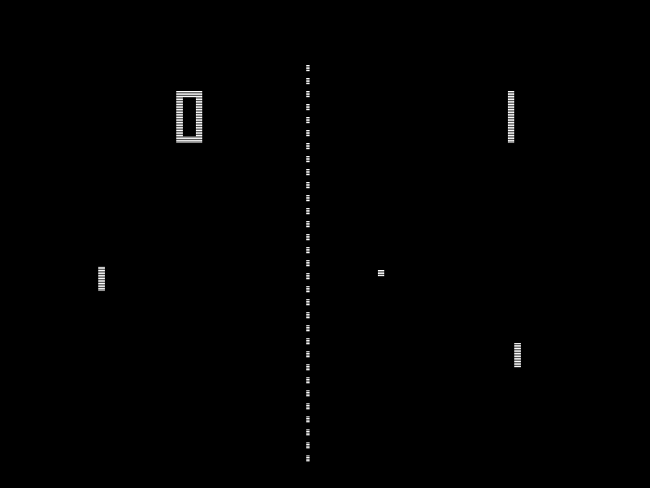

Pagina Inicial
Atari Pong
Atari 2600
Atari 5200
Contato
Trabalhe conosco
Alternar Modo
Um gabinete de Pong em exposição no Neville Public Museum of Brown County

Jogabilidade de Pong
Versão doméstica de Pong lançada em 1975